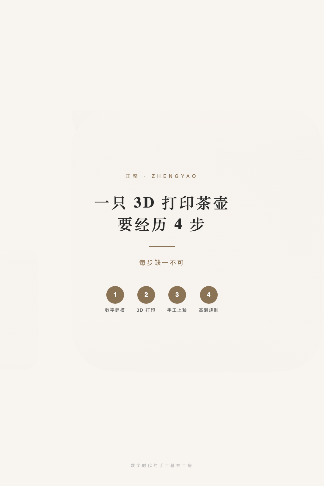
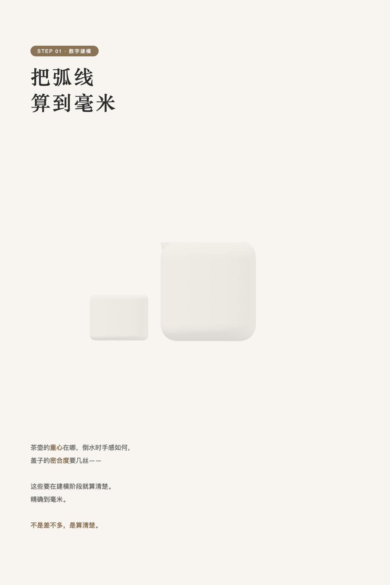
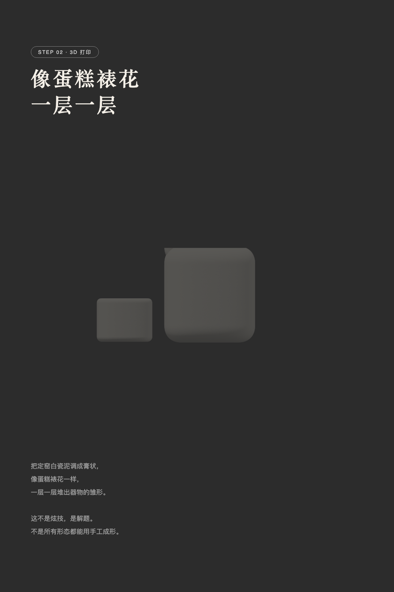
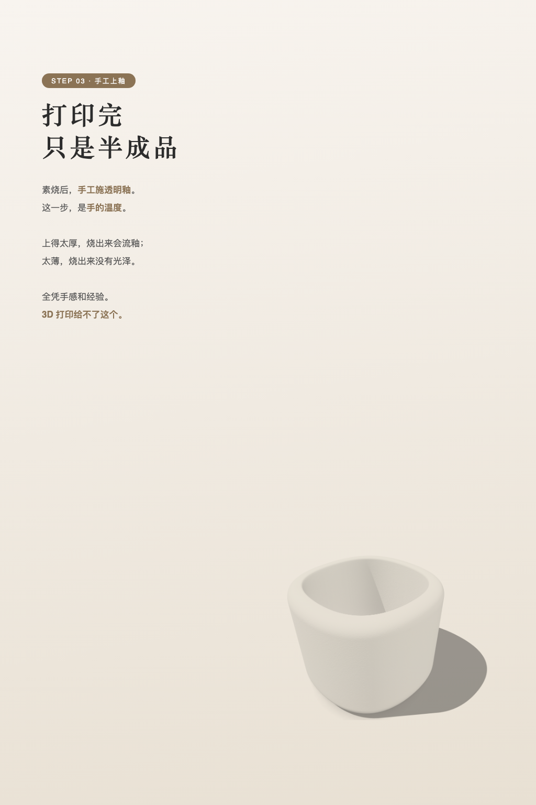
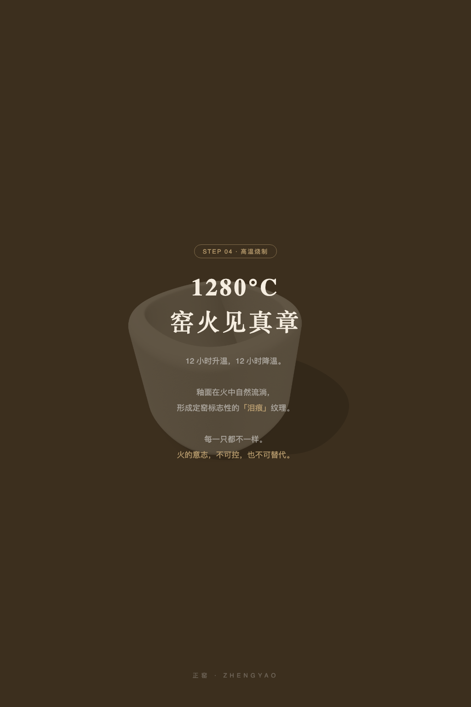
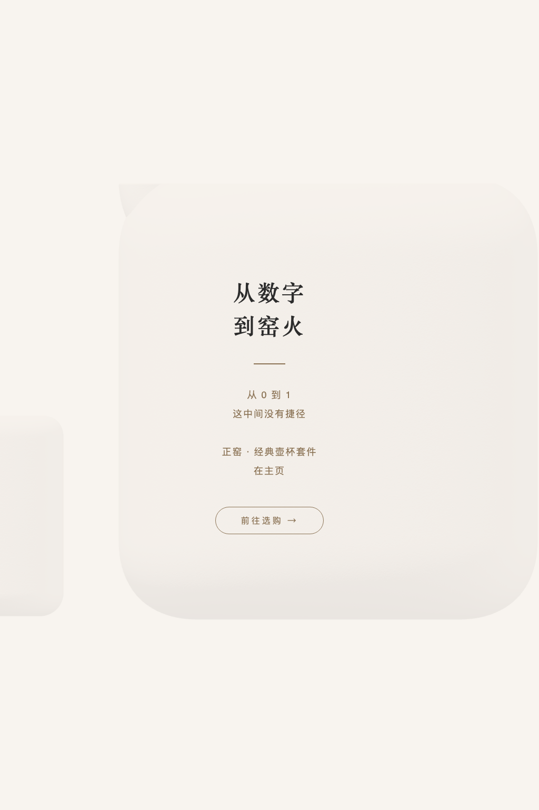

一只 3D 打印茶壶
要经历 4 步
要经历 4 步
很多人以为 3D 打印就是「按个按钮，等它打完」。
其实不是。
一只正窑的茶壶，从数字模型到最终出炉，
要经历 4 步，每一步都缺一不可……
其实不是。
一只正窑的茶壶，从数字模型到最终出炉，
要经历 4 步，每一步都缺一不可……
一只 3D 打印茶壶，要经历 4 步，每步缺一不可






很多人以为 3D 打印就是「按个按钮，等它打完」。
其实不是。
一只正窑的茶壶，从数字模型到最终出炉，
要经历 4 步，每一步都缺一不可……
STEP 01 · 数字建模 把弧线算到毫米
茶壶的重心在哪，倒水时手感如何，
盖子的密合度要几丝——
这些要在建模阶段就算清楚。
精确到毫米。
不是差不多，是算清楚。
STEP 02 · 3D 打印 像蛋糕裱花，一层一层
把定窑白瓷泥调成膏状，
像蛋糕裱花一样，
一层一层堆出器物的雏形。
这不是炫技，是解题。
不是所有形态都能用手工成形。
STEP 03 · 手工上釉 打印完，只是半成品
素烧后，手工施透明釉。
这一步，是手的温度。
上得太厚，烧出来会流釉；
太薄，烧出来没有光泽。
全凭手感和经验。
3D 打印给不了这个。
STEP 04 · 高温烧制 1280°C，窑火见真章
12 小时升温，12 小时降温。
釉面在火中自然流淌，
形成定窑标志性的「泪痕」纹理。
每一只都不一样。
火的意志，不可控，也不可替代。
从数字，到窑火。
从 0 到 1，这中间没有捷径。
正窑 · 经典壶杯套件，在主页。